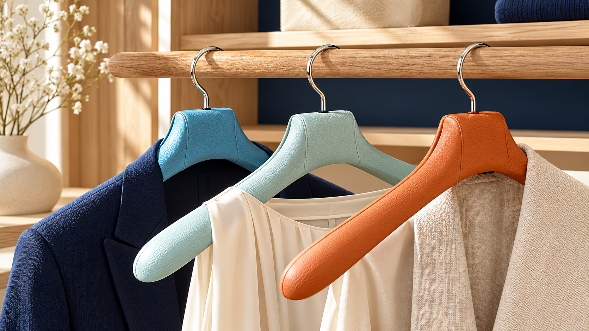

Activité principale
LC MARKET
Trading & investissement
- Suivi de portefeuille
- Stratégies intraday & swing
- Analyse des marchés
- Watchlists & opportunités
- Objectifs et suivi de performance
- Ressources et outils
Un seul projet, trois domaines complémentaires.

LC Performance 360 est un projet personnel que je construis autour de trois univers qui occupent une place importante dans mon quotidien : les marchés financiers, le padel et le développement de nouveaux projets.
Je m’appelle Laurent Colonnier. Je travaille dans la logistique et je développe progressivement ce projet en parallèle de mon activité professionnelle. L’objectif est de partager ici mon expérience, mes méthodes, mes progrès et les outils que j’utilise, avec une approche concrète et évolutive.
LC Market constitue le cœur économique du projet autour du trading et de l’investissement. LC Padel rassemble mon parcours sportif, les entraînements, la préparation physique, les compétitions et les stages. LC Events, encore en développement, sera consacré aux événements, partenariats et collaborations.
Le site évoluera avec le projet : nouvelles fonctionnalités, suivi de performance, contenus et, à terme, une application LC Performance 360.
Trading & investissement
Padel • préparation physique • stages
Événementiel • entreprises • sport
Des sites pour présenter votre activité, mettre en valeur vos offres et faciliter le contact avec vos clients. Découvrez notre approche et la maquette LOC 31, dédiée à la vente et à la location de véhicules.
Découvrir la création de sites →
Rejoindre eToro — mon lien de parrainage ↗Lien de parrainage de Laurent Colonnier.